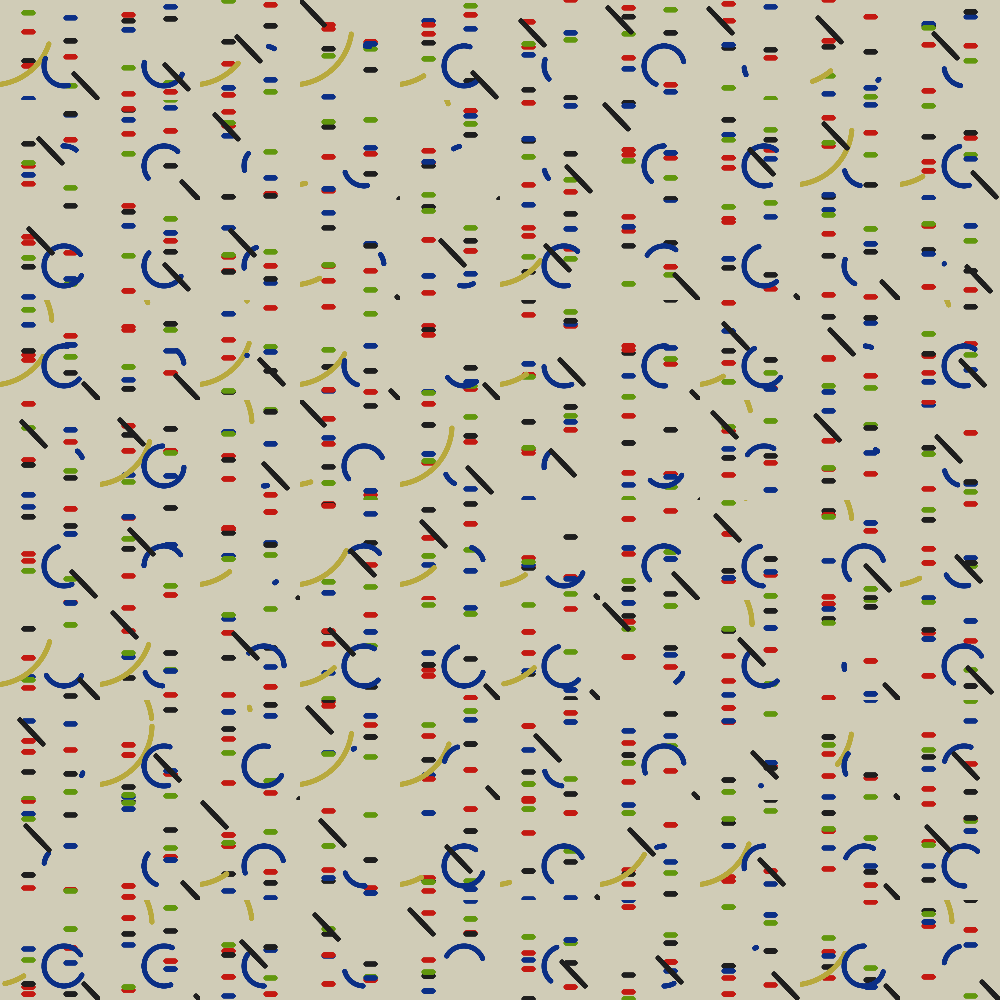
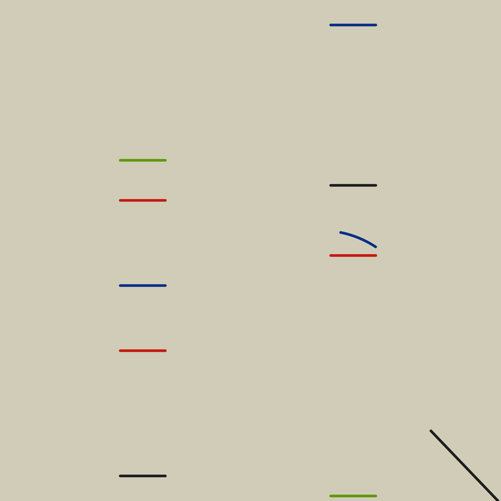

Rando-Hlito
The first #RecreationThursday challenge involved Alfredo Hlito’s Curves and Straight Series (1948), held by New York’s MoMA.
My recreation uses only base R functions:
![A recreation of Curves and Straight Lines (1948) by Alfred Hlito, which is an oil painting of colorful geometric lines on a cream background. Starting at the top of the painting in the middle there is a dark yellow curve. Intersecting it in the center of the painting is a black line at a 45 degree angle and a dark blue curve. In the top right of the center area there are short horizontal black blue green and red lines. In the top left of the center area are horizontal green red blue and black lines. In the bottom left of the center there is a short horizontal red line.](resources/recreate-hlito.png)
My remix is a 10 by 10 grid where the elemental geometry is randomised:

I also made a gif remix that’s composed of 10 ‘rando-Hlitos’:

Approach
You can find all the commented code and the outputs in my matt-dray/viz-recreation GitHub repo.
Recreate
I chose to use base R plotting functions for this project. Largely for the simplicity and for the lack of dependencies, but also due to success I had recently when recreating another artwork.
The overall principle was relatively straightforward: use trial-and-error to place elements made with the line() and segments() functions. It’s not perfect, but it’s close enough.
To summarise the code, it first opens the png() graphics device; sets par()ameters to exclude margins and set the background colour; plot()s an empty plot; builds lines with x and y coordinates; builds circle segments with x, y, radius and theta; and finally closes the device with dev.off().
Remix
There’s some great remixes on the #RecreationThursday hashtag in Twitter and I particularly liked the ones that went for slight variations in stroke and placement, as well as those with an animated approach.
In this vein, I chose to vary randomly the elements of the plot using a custom function, vary_hlito().
The randomisation was relatively simplistic: vary the y-axis location of each of the horizontal lines, but maintain their widths and colours; provide different segment lengths for each of the two circles while retaining their radii and centres; vary the length and placement of the diagonal line running top-left to bottom-right.
There’s a number of ways to present these ‘rando-Hlitos’. I thought it would be interesting to do two things: create a large grid of many recreations (i.e. create a ‘meta’ rando-Hlito) and create an animation (i.e. a sequential reveal of many recreations). I think these are interesting in different ways.
In particular, I think the 10 by 10 grid echoes two completely different styles: the repeating nature is a bit like a moquette pattern from the London Underground, while the colours and shapes aren’t far off a 90s Memphis Style.
To summarise the code, the grid was created by setting a 10 by 10 panel with mfrow = c(10, 10) passed to par() and then different seeds were passed into vary_hlito() with purrr::walk() to dictate the randomness. The animation was generated by looping over randomly-selected seeds and saving each output as a PNG, before stitching these frames into a gif with the {magick} package.
Environment
Session info
Last rendered: 2023-07-25 15:01:33 BST
R version 4.3.1 (2023-06-16)
Platform: aarch64-apple-darwin20 (64-bit)
Running under: macOS Ventura 13.2.1
Matrix products: default
BLAS: /Library/Frameworks/R.framework/Versions/4.3-arm64/Resources/lib/libRblas.0.dylib
LAPACK: /Library/Frameworks/R.framework/Versions/4.3-arm64/Resources/lib/libRlapack.dylib; LAPACK version 3.11.0
locale:
[1] en_US.UTF-8/en_US.UTF-8/en_US.UTF-8/C/en_US.UTF-8/en_US.UTF-8
time zone: Europe/London
tzcode source: internal
attached base packages:
[1] stats graphics grDevices utils datasets methods base
loaded via a namespace (and not attached):
[1] htmlwidgets_1.6.2 compiler_4.3.1 fastmap_1.1.1 cli_3.6.1
[5] tools_4.3.1 htmltools_0.5.5 rstudioapi_0.15.0 yaml_2.3.7
[9] rmarkdown_2.23 knitr_1.43.1 jsonlite_1.8.7 xfun_0.39
[13] digest_0.6.33 rlang_1.1.1 evaluate_0.21